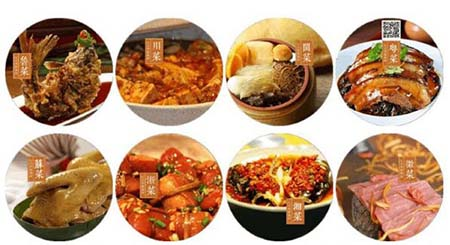
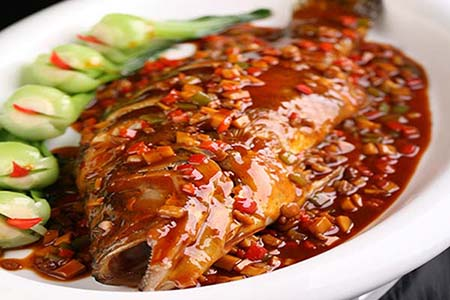
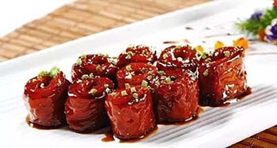
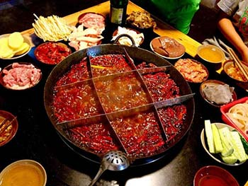
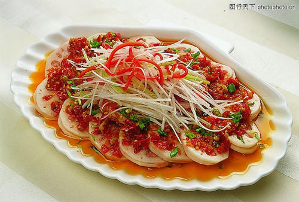
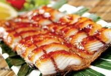
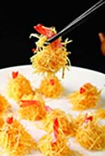
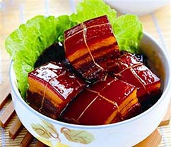
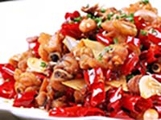

八大菜系
中国是一个餐饮文化大国，长期以来在某一地区由于地理环境、气候物产、文化传统以及民族习俗等因素的影响，形成有一定亲缘承袭关系、菜点风味相近，知名度较高，并为部分群众喜爱的地方风味著名流派称作菜系。其中，鲁菜、川菜、粤菜、闽菜、苏菜、浙菜、湘菜、徽菜享称为“八大菜系”。
早在春秋战国时期，中国传统饮食文化中南北菜肴风味就表现出差异。到唐宋时，南食、北食各自形成体系。发展到清代初期时，鲁菜、苏菜、粤菜、川菜，成为当时最有影响的地方菜，被称作“四大菜系”。到清末时，浙菜、闽菜、湘菜、徽菜四大新地方菜系分化形成，共同构成中国传统饮食文化中的“八大菜系”。
菜系介绍
徽菜
简介
徽菜，即徽州菜，而不是安徽菜。由于背离人心的徽州改名事件，徽州易名黄山市，没有了地级市徽州的行政区划，别有用心之人与社会组织为假借徽州而美化自己，欲泛滥“徽”字。“安徽”之“徽”来自“徽州”，安徽的简称系皖，而不系徽（徽是徽州的简称），如果将来有安徽菜这一菜系的存在，也应该是叫皖菜。 徽菜起源于南宋时期的徽州府（今安徽省黄山市一带，府治在今安徽歙县），原是徽州山区的地方风味。由于徽商的崛起，这种地方风味逐渐进入市肆，流传于苏、浙、赣、闽、沪、鄂以至长江中、下游区域，具有广泛的影响，明清时期一度居于八大菜系之首。主要名菜有火腿炖甲鱼、红烧果子狸、腌鲜鳜鱼、黄山炖鸽等。 宋高宗曾问歙味于学士汪藻，汪藻举梅圣俞诗对答“雪天牛尾狸，沙地马蹄鳖”。牛尾狸即果子狸，又名白额。据《徽州府志》记载，早在南宋间，用徽州山区特产“沙地马蹄鳖，雪天牛尾狸”做菜已闻名各地。 徽菜发端于唐宋，兴盛于明清，民国间继续发展。徽菜起源于绩溪县（古徽州）。后来，由于新安江畔的屯溪小镇成为“祁红”、“屯绿”等名茶和徽墨、歙砚等土特产品的集散中心，商业兴起，饮食业发达，徽菜也随之转移到了屯溪，并得到了进一步发展。安徽省绩溪县被授予中国徽菜之乡称号，每年均举办国际徽菜饮食文化节。
特色
当年的徽菜，由于红烧是一大类，而红烧的“红”，表现在糖色上面。对火功要求苛刻。炒菜用油是自种自榨的菜籽油，并使用大量木材作燃料：有炭火的温炖，有柴禾的急烧，有树块的缓烧，是比较讲究的。传统中的重油、重色、重火功，有徽州的特殊条件。 当徽菜走向全国之后，仍然保持重色：调色之功；重油：调味之功；重火功：调质之功。如老或嫩，硬或软，结或松等。徽菜用火腿调味是传统。制作火腿，在徽州也是普及型的家庭技术。美食家们十分赞赏徽州火腿。只是人们还不了解：“金华火腿在东阳，东阳火腿在徽州。”这一带古属徽州或徽州边缘，是徽商首先到达的地方。李白在金华就留下诗名：“闻说金华渡，东连五百滩。他年一携手，摇桨入新安（即徽州）。”唐代就从金华想到徽州，一水相连，以后来往就更频繁了。 徽菜的烹饪技法，包括刀工、火候和操作技术，徽菜之重火工是历来的优良传统，其独到之处集中体现在擅长烧、炖、熏、蒸类的功夫菜上，不同菜肴使用不同的控火技术是徽帮厨师造诣深浅的重要标志，也是徽菜能形成酥、嫩、香、鲜独特风格的基本手段，徽菜常用的烹饪技法约有20大类50余种，其中最能体现徽式特色的是滑烧、清炖和生熏法
鲁菜
简介
山东菜可分为济南风味菜、胶东风味菜、孔府菜和其他地区风味菜，并以济南菜为典型，煎炒烹炸、烧烩蒸扒、煮氽熏拌、溜炝酱腌等有50多种烹饪方法。
特色
济南菜以清香、脆嫩、味厚而纯正著称，特别精于制汤，清浊分明。 胶东风味亦称福山风味，包括烟台、青岛等胶东沿海地方风味菜。该菜精于海味，善做海鲜，珍馔佳品，肴多海味，且少用佐料提味。 孔府菜做工精细，烹调技法全面，尤以烧、炒、煨、炸、扒见长，而且制作过程复杂。以煨、炒、扒等技法烹制的菜肴，往往要经过三四道程序方能完成。 经典代表菜系有：葱烧海参、糖醋鲤鱼、九转大肠、油焖大虾、醋椒鱼、糟熘鱼片、温炝鳜鱼片、芫爆鱿鱼卷、清汤银耳、木樨肉（木须肉）、胶东四大温拌、糖醋里脊、红烧大虾、招远蒸丸、枣庄辣子鸡、清蒸加吉鱼、葱椒鱼、糖酱鸡块、油泼豆莛等。
川菜
简介
川菜在原有的基础上，吸收南北菜肴之长及官、商家宴菜品的优点，形成了北菜川烹、南菜川味的特点，享有“食在中国，味在四川”的美誉
特色
川菜讲究色、香、味、形，在“味”字上下功夫，以味的多、广、厚著称。川菜口味的组成，主要有“麻、辣、咸、甜、酸、苦、香”7种味道。有麻辣、酸辣、红油、白油等几十种各具特色的复合味，有“一菜一格，百菜百味”的称誉。 川菜在烹调方法上，善于根据原料、气候和食者的要求，具体掌握，灵活运用。38种川菜烹调方法中，现在流行的仍有炒、煎、炸、烧、腌、卤、煸、泡等30多种。在烹调方法中，特别以小煎小炒、干烧干煸见长。 川菜代表菜有：干烧岩鲤、干烧桂鱼、鱼香肉丝、怪味鸡、宫保鸡丁、粉蒸牛肉、麻婆豆腐、毛肚火锅、干煽牛肉丝、夫妻肺片、灯影牛肉、担担面、赖汤圆、龙抄手等。
粤菜
简介
广东菜简称粤菜。由广州菜（也称广府菜）、潮州菜（也称潮汕菜）、东江菜（也称客家菜）三种地方风味组成，三种风味各具特色
特色
在世界各地粤菜与法国大餐齐名，世界各国的中菜馆，多数是以粤菜为主，因此有不少人认为粤菜是海外中国的代表菜系。粤菜的特点是丰富精细的选材和清淡的口味。粤菜可选原料多，自然也就精细。粤菜讲究原料的季节性，“不时不吃”。吃鱼，有“春鳊秋鲤夏三犁（鲥鱼）隆冬鲈”；吃蛇，则是“秋风起三蛇肥，此时食蛇好福气”；吃虾，“清明虾，最肥美”；吃蔬菜要挑“时菜”，是指合季节的蔬菜，如菜心为“北风起菜心最甜”。除了选原料的最佳肥美期之外，粤菜还特别注意选择原料的最佳部位。粤菜味道讲究“清、鲜、嫩、滑、爽、香”，追求原料的本味、清鲜味，粤菜调味品种类繁多，遍及酸、甜、苦、辣、咸、鲜。但只用少量姜葱、蒜头做“料头”，而少用辣椒等辛辣性作料，也不会大咸大甜。这种追求清淡、追求鲜嫩、追求本味的特色，既符合广东的气候特点，又符合现代营养学的要求，是一种科学的饮食文化。 [1] 广州菜范围包括珠江三角洲和肇庆、韶关、湛江等地，用料丰富，选料精细，技艺精良，清而不淡，鲜而不俗，嫩而不生，油而不腻。擅长小炒，要求掌握火候和油温恰到好处。还兼容了许多西菜做法，讲究菜的气势、档次。潮州菜发源于潮汕地区，汇闽、粤两家之长，自成一派。以烹制海鲜见长，汤类、素菜、甜菜最具特色。刀工精细，口味清纯。东江菜起源于广东东江一带的客家人聚居地区，菜品多用肉类，极少水产，主料突出，讲究香浓，下油重，味偏咸，以砂锅菜见长，有独特的乡土风味。 [1] 经典粤菜有：白切鸡、烧鹅、烤乳猪、红烧乳鸽、蜜汁叉烧、上汤焗龙虾、清蒸石斑鱼、阿一鲍鱼、鲍汁扣辽参、白灼虾、椰汁冰糖燕窝、菜胆炖鱼翅、麒麟鲈鱼、龙虾烩鲍鱼、干炒牛河、老火靓汤、广州文昌鸡、煲仔饭、广式烧填鸭、豉汁蒸排骨、菠萝咕噜肉、香煎芙蓉蛋、鼎湖上素、烟筒白菜、鱼香茄子煲、太爷鸡、赛螃蟹、香芋扣肉、南乳粗斋煲、潮州卤水拼盘、卤水猪手、卤鹅肝、蚝烙、芙蓉虾、沙茶牛肉、客家酿豆腐、梅菜扣肉、盐焗鸡、猪肚包鸡、盆菜等。
闽菜
简介
福建菜俗称闽菜，是中国著名八大菜系之一，以福州菜为代表，素以制作细巧、色调美观、调味清鲜著称。
特色
福建菜以海鲜类为主，口味方面则咸、甜、酸、辣、香具备，咸的调味品有虾酱、虾油、豉油等；甜的有红糖、冰糖等；酸的有白醋、乔头等；辣的有胡椒、芥末等；香的有红糖、五香粉、八角、桂皮等。 福建菜也有煎、炸、炻（如煮）、烤、炖、拌、醉、卤、扒、糟、煨、扣、溜、炒、熏、焖、扛、腌、炝等，其中最具特色的是糟，有扛糟、炝糟、爆糟、炸糟之分。 代表菜有：佛跳墙、鸡汤氽海蚌、淡糟香螺片、沙奈焖鸭块、七星鱼丸、糟醉鸡、煎糟鳗鱼、半月沉江、燕皮馄饨、福州线面、蚝仔煎等等。
苏菜
简介
江苏的历代名厨造就了苏菜风格的传统佳肴，而“天堂”美誉的苏州和“壮丽东南第一州”的运河之都淮安以及被史家叹为“富甲天下”的扬州则是名厨美馔的摇篮。苏菜正是以这三方风味为主汇合而成的。
特色
苏菜有如下几个特点：一是选料严谨，制作精细；二是擅长炖、焖、煨、焐、蒸、烧、炒等烹饪方法；三是口味清鲜，咸甜得宜，浓而不腻，淡而不薄；四是注重调汤，保持原汁。苏州菜口味趋甜，刀工精细，火候精微，色调清新，造型别致，突出主料，强调本味，清淡可口，适应面宽，尤以擅长制汤而著称。其代表菜有：大煮干丝、扬州狮子头、叫花鸡、水晶虾仁等。
浙菜
简介
浙江菜简称浙菜，是浙江地方风味菜系。 浙江是江南的鱼米之乡。浙菜有如下几大特征：一是用料广博，配伍严谨。主料注重时令和品种，配料、调料；二是刀工精细；三是火候调味，最重适度；四是清鲜嫩爽，滋、味兼得；五是浙菜四支，风韵各具。
特色
浙江菜主要由杭州、宁波、绍兴、温州四支地方风味菜组成。杭州菜制作精细，清秀隽美，擅长爆、炒、烩、炸等烹调技法，具清鲜、爽嫩、精致、醇和等特点。宁波地方厨师尤善制海鲜，技法以炖、烤、蒸著称，口味鲜咸适度，菜品讲究鲜嫩爽滑，注重本味。绍兴菜品香酥绵糯，汤浓味醇，富有水乡古城之淳朴风格。温州菜也称“瓯菜”，瓯菜则以海鲜人馔为主，口味清鲜，淡而不薄，烹调讲究“二轻一重”，即轻油、轻芡、重刀工。
湘菜
简介
湘菜又称湖南菜，由于湖南民丰物博，向称鱼米之乡
特色
湘菜以腴滑肥润为主，多将辣椒当主菜食用，不仅有北方的咸，也有南方的甜，湘菜特别讲究原料的入味，技法多样，有烧、炒、蒸、熏等方法。湘菜的特殊料有豆豉、茶油、辣油、辣酱、花椒、茴香、桂皮等。湘菜以辛辣著称